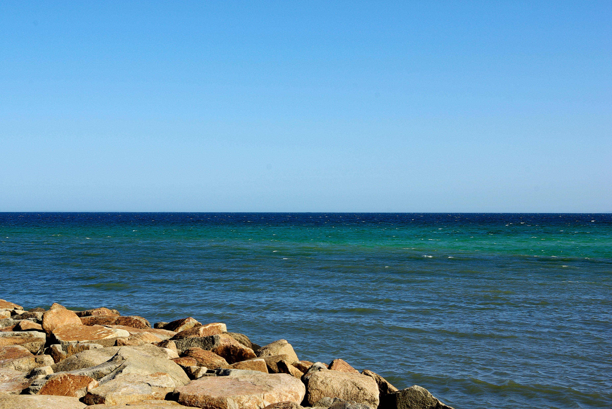
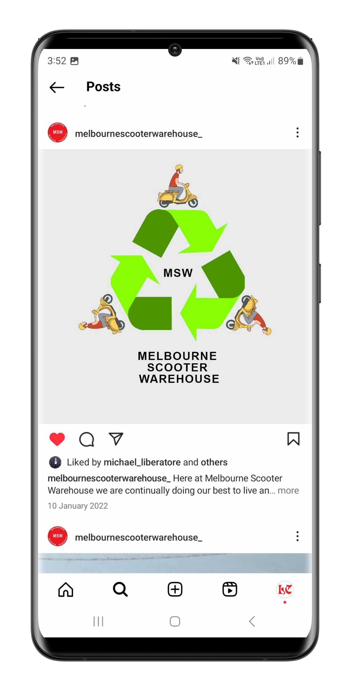
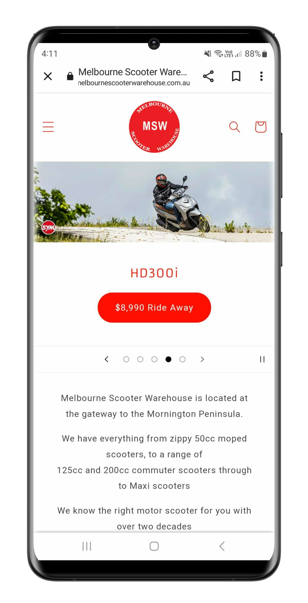

SAGE GREEN AND WHITE TOTE BAG DESIGN
SAGE GREEN AND WHITE TOTE BAG DESIGN For Private Mountain's merchandise I designed some tote bag designs. The design for the tote bags conveys a clean yet simple design drawing on the band's existing VHS/glitchy aesthetic, translated to a physical tote bag.
All tote bags were printed by Sound Merch
 BLACK AND WHITE TOTE BAG DESIGN
BLACK AND WHITE TOTE BAG DESIGN For Private Mountain's tote bags I created a mountain graphic and experimented with different textures to produce the final outcome being a glitchy looking mountain one would see on an old CRT TV screen.
All tote bags were printed by Sound Merch
For Melbourne artist collective Couchdog Collective, I went for a more illustrative type design consisting of dogs forming each letter of the logo to create a playful and more visually expressive logo to suit the style of content Couchdog Collective produces.
This was a really fun brief working with a few simple but effective colours, a fun hand drawn graphic and generally taking on a more hands-on approach with initial sketches and experimenting with textures for the final design.
Go check out Weather Vane Records and maybe even buy a 7" or a tape?
 The Pocket - Promotional Social Media Tiles
The Pocket - Promotional Social Media Tiles The purpose of each social media tile is to promote the DJs and artists for Miscellaneous Fuzz's social media event posts.
 The Pocket - Promotional Social Media Tiles
The Pocket - Promotional Social Media Tiles All designs were produced with a high threshold in Photoshop and the artists names were all created with hand stamped lettering. All letters were cut out from thick cardboard material and hand pressed with black ink to paper then scanned to capture the texture of the paper, ink and cardboard letters. The scanned text was then laid out with the high threshold images on InDesign.
 DFPR STICKERS
DFPR STICKERS My logo redesign for 'Dead Family Pets Records' has been translated into both digital use for the record label's website and social media, as well as for print purposes.
 LOGO REDESIGN
LOGO REDESIGN I redesigned a logo for a small independent Melbourne record label called 'Dead Family Pets Records'.
 AT PEACE PANORAMA EP COVER
AT PEACE PANORAMA EP COVER For Melbourne instrumentalist Dune Peaks, I designed his second EP cover 'At Peace Panorama'.
Listen here to the EP.
 SHADOWPLAY - Shot on PENTAX K10D
SHADOWPLAY - Shot on PENTAX K10D
 MELBOURNE CURVES - Canon EOS 550D
MELBOURNE CURVES - Canon EOS 550D
 FOLEY MAGAZINE EVENT A3 POSTER
FOLEY MAGAZINE EVENT A3 POSTER The A3 poster was designed with a psychedelic aesthetic inspired by Foley Magazine's 3rd edition.
 PRIVATE MOUNTAIN SINGLE LAUNCH POSTER
PRIVATE MOUNTAIN SINGLE LAUNCH POSTER A3 poster drawing on the VHS aesthetic of the band's existing visuals.
 DUNE PEAKS EP COVER
DUNE PEAKS EP COVER The design draws on washed-out textures, halftone bitmap effects and atmospheric photography.
 PRIVATE MOUNTAIN '22' SINGLE COVER DESIGN
PRIVATE MOUNTAIN '22' SINGLE COVER DESIGN Minimal VHS-inspired single artwork designed during my internship at Push Records.

CLIFF'S EDGE - Shot on PENTAX K10D SEASCAPE - Shot on PENTAX K10D
SEASCAPE - Shot on PENTAX K10D
Logo design for Mornington Peninsula based retailer Melbourne Scooter Warehouse.
 MELBOURNE SCOOTER WAREHOUSE SIGNAGE
MELBOURNE SCOOTER WAREHOUSE SIGNAGE  BONBEACH - Shot on PENTAX K10D
BONBEACH - Shot on PENTAX K10D
 MELBOURNE - Shot on Canon EOS 550D
MELBOURNE - Shot on Canon EOS 550D
 MAP OF MELBOURNE ARCHITECTURE
MAP OF MELBOURNE ARCHITECTURE A print-based Melbourne city guide focused on architecture and photography.
 SPACE ODYSSEY BOOK COVERS
SPACE ODYSSEY BOOK COVERS Experimental collage-based sci-fi book cover redesigns for Arthur C. Clarke’s Space Odyssey series.
 MAP OF MELBOURNE ARCHITECTURE
MAP OF MELBOURNE ARCHITECTURE Minimal map design printed on durable stock for repeated folding and use.
 SPACE ODYSSEY BOOK COVERS
SPACE ODYSSEY BOOK COVERS Printed on glossy matte stock to reinforce the surreal sci-fi aesthetic.
 TYPE SETTING IN DYMO
TYPE SETTING IN DYMO An A2 poster fully typeset using a Dymo label maker exploring punk aesthetics and design limitations.

SOCIAL MEDIASocial media graphics designed for Melbourne Scooter Warehouse.

MOBILE WEBSITE DESIGNResponsive eCommerce website design for Melbourne Scooter Warehouse.
Click here to visit the website.